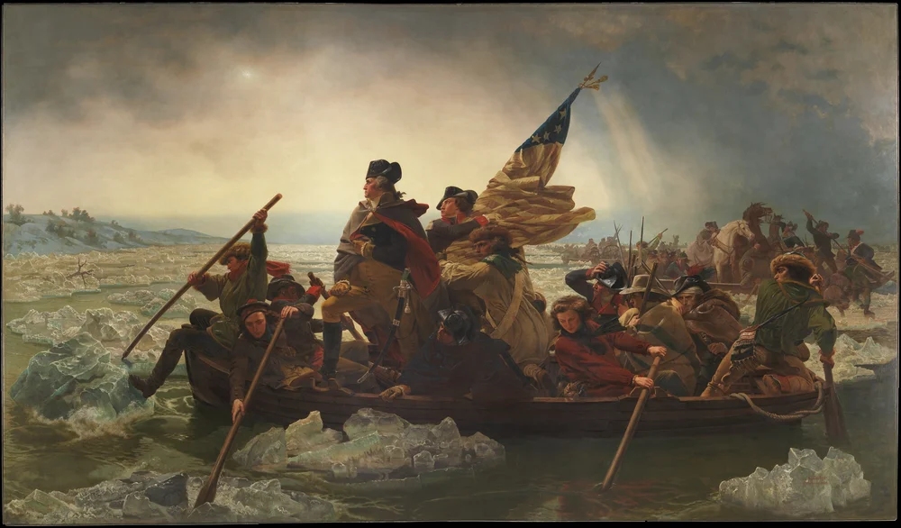
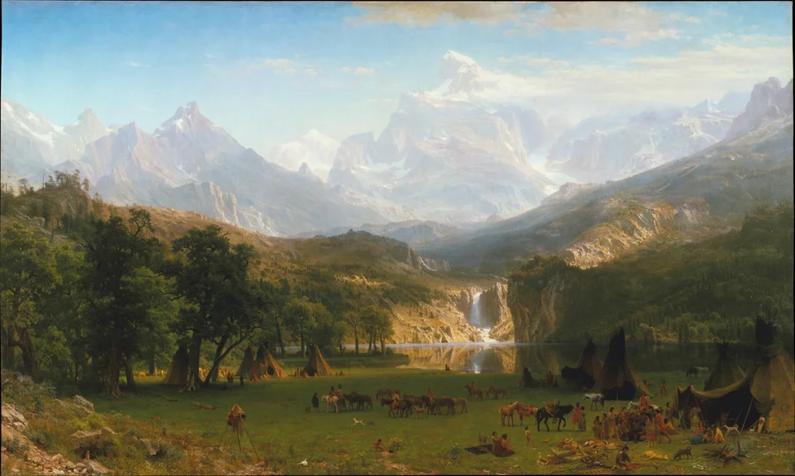
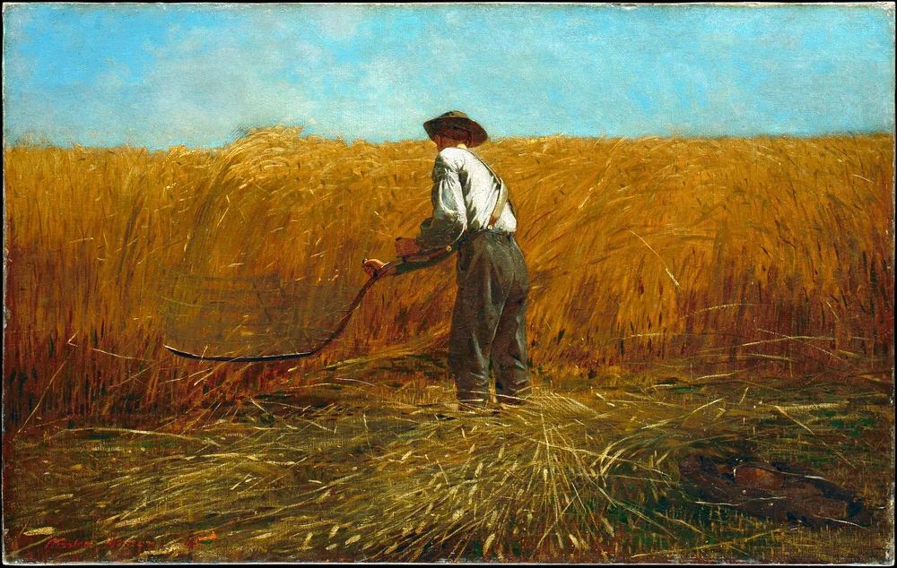

American History · Chapter lesson
History through art
Look closely at paintings and ask how artists interpret the past.
The American canvas · Public domain collection
History through an artist’s eyes
Step into a river crossing, a harvest, and sweeping landscapes. Select a painting to study it together; use the arrow keys to compare the collection.

Leutze painted this dramatic scene in 1851, looking back at the December 1776 crossing. Light, ice, and the crowded boat turn a military maneuver into a story of resolve. This is a later interpretation, not an eyewitness record.
Look closely: How do light and the position of Washington guide your attention?
The Metropolitan Museum of Art · Gift of John Stewart Kennedy, 1897 · Public domain / Open Access · Museum source & rightsExplore the Revolution →
In The Oxbow (1836), Cole places storm-darkened woods beside cultivated fields in Massachusetts. The contrast invites questions about farming, settlement, and changes to the land.
Look closely: Where does the painting suggest a boundary between cultivated land and woodland?
The Metropolitan Museum of Art · Gift of Mrs. Russell Sage, 1908 · Public domain / Open Access · Museum source & rightsExplore expansion →
Bierstadt painted this monumental landscape in 1863 after traveling west. Its dramatic mountains frame a Shoshone encampment. These were Indigenous homelands; the view also reflects ideas that encouraged U.S. expansion.
Look closely: What changes when you look at the people before looking at the mountains?
The Metropolitan Museum of Art · Rogers Fund, 1907 · Public domain / Open Access · Museum source & rightsExplore expansion →
Homer painted The Veteran in a New Field in 1865, as the Civil War ended. The discarded Union jacket identifies a soldier returning to farm work. Harvest and the scythe suggest both renewal and loss.
Look closely: Which details make this a painting about war even though there is no battle?
The Metropolitan Museum of Art · Bequest of Miss Adelaide Milton de Groot (1876-1967), 1967 · Public domain / Open Access · Museum source & rightsExplore Reconstruction →See · Think · Wonder Name a detail you can see. Explain what it makes you think. Ask what another source could help you discover. Paintings reflect choices about whose stories and landscapes are shown.